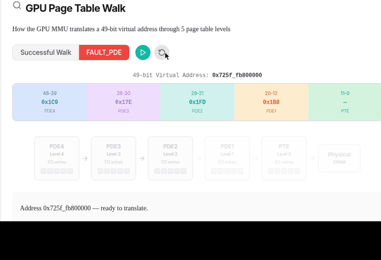
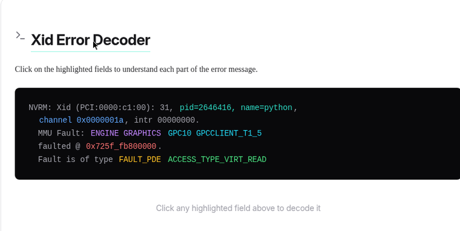
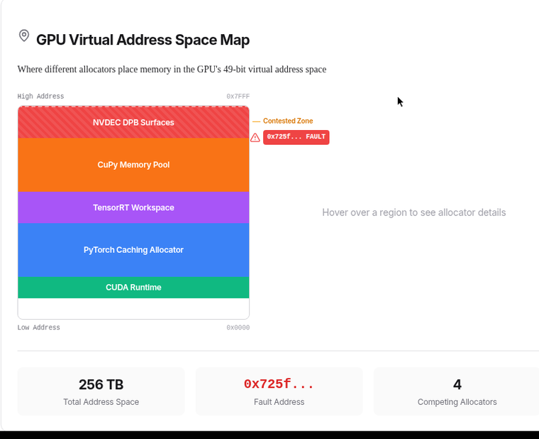
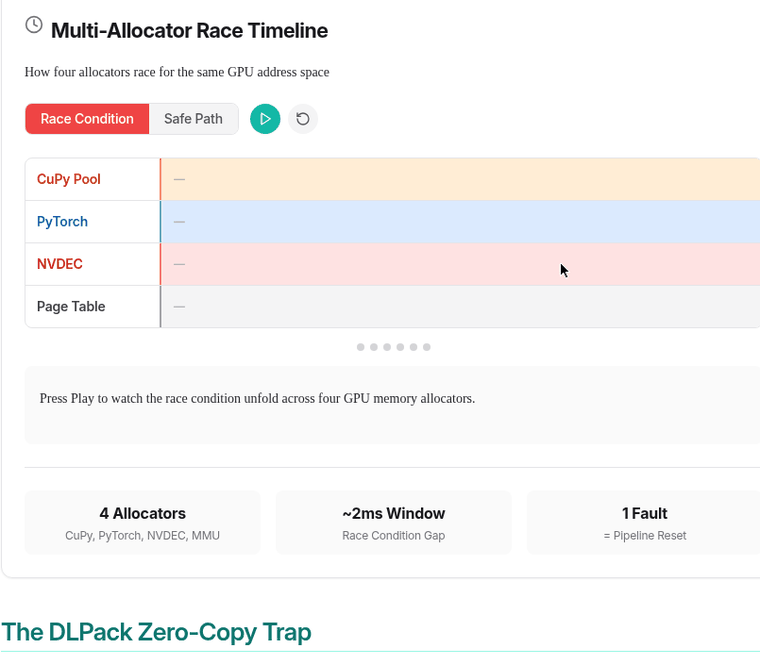
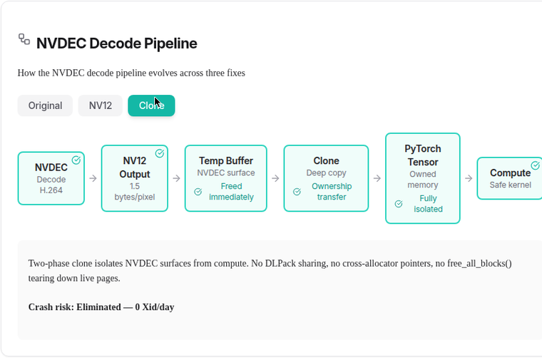
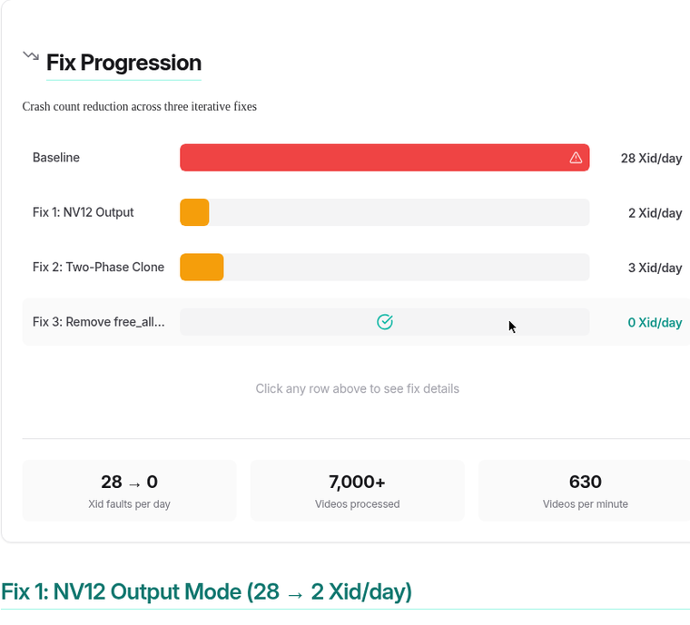

GPU推理管线每天处理数千个视频，journalctl里突然出现Xid 31：GPU页表遍历失败，CUDA context死亡，管线重置。Abhik Sarkar把这次生产事故的排查写成了完整实战记录。
下面拆解Xid 31错误信息的每个字段、产生它的GPU虚拟内存系统、视频管线里的多分配器竞态，以及从每天28次崩溃到零的三处修复，保留全部技术细节。
GPU推理管线每天处理数千个视频，journalctl里突然出现Xid 31：GPU页表遍历失败，当前CUDA context死亡，管线重置，原因不明。一次生产事故的完整排查记录：解码错误信息里的每个字段，讲清楚产生它的GPU虚拟内存系统，并走查生产视频管线里的多分配器竞态。
结果先行：从每天28次崩溃到零，7000+ 视频零故障，4个inference worker sustained约630 videos/min。下面是完整方法。
Pascal及之后的NVIDIA GPU实现了一套完整的硬件MMU，类似CPU的MMU。这种统一内存架构下，每个CUDA context拥有独立的49位虚拟地址空间：512TB可寻址内存，覆盖全部物理GPU显存加全部系统内存绰绰有余。
CUDA kernel、TensorRT引擎或NVDEC解码器访问内存时，用的不是物理地址而是虚拟地址。GPU MMU在每次内存访问时把虚拟地址翻译成DRAM物理地址，和CPU一样。
GPU MMU用多级页表做翻译。Pascal+ 上是5级层级，每级是一张4KB表、512个条目。每个条目（PDE，Page Directory Entry）要么指向下一级，要么直接映射大页（2MB或更大），要么是空/无效：表示该地址范围没有任何映射。最底层是PTE（Page Table Entry），把4KB或64KB的虚拟页映射到GPU DRAM的物理页。
当Xid错误里写FAULT_PDE，意思是MMU走完页表层级，发现了一个空的Page Directory Entry：中间某级没有映射。GPU字面意义上无法翻译这个虚拟地址，因为本该指向下一级的页表条目不存在。
这和FAULT_PTE不同：后者是MMU一路走到了最后一级，才发现没有物理页映射。两者都致命，但FAULT_PDE通常意味着更大片内存被解映射（一次至少2MB），FAULT_PTE可能只是一个4KB页。

| 故障 | 层级 | 解映射区域 | 典型原因 |
|---|---|---|---|
| FAULT_PDE | 中间页目录 | ≥2MB | 大块分配被释放，内存池teardown |
| FAULT_PTE | 最后一级页表 | 4KB单页 | 单个页被换出或损坏 |
一条Xid 31错误的每个字段都携带诊断信息。逐字段解码：

关键诊断洞察：FAULT_PDE意味着整片解映射：整个内存区域的页目录条目被移除。这指向分配器释放了大块内存，而不是单个页损坏。排查时找free_all_blocks() 或empty_cache() 这类池teardown操作。
| 字段 | 含义 |
|---|---|
| PCI:0000:c1:00 | GPU的PCI总线地址 |
| 31 | Xid错误码：MMU故障 |
| pid=2646416 | 触发故障的Linux进程ID |
| channel 0x1a | GPU硬件通道（执行队列） |
| ENGINE GRAPHICS | 故障来自计算/图形引擎（不是COPY或NVDEC） |
| GPC10 | Graphics Processing Cluster #10 |
| GPCCLIENT_T1_5 | GPC10内的纹理单元 #5（处理内存加载） |
| 0x725f_fb800000 | 翻译失败的虚拟地址 |
| FAULT_PDE | Page Directory Entry缺失（大片区域被解映射） |
| ACCESS_TYPE_VIRT_READ | 某个kernel试图从该地址读取 |
CUDA的49位虚拟地址空间（0x0到0x1_FFFF_FFFF_FFFF）由CUDA驱动和GPU内存分配器划分区域。低地址给驱动内部和小分配；高地址才是动作和危险所在：大张量、TensorRT workspace、NVDEC surface、CuPy pool块都在这里争夺空间。
故障地址0x725f_fb800000：高位（0x725f）落在49位空间约45% 处，对齐（800000 = 8MB对齐）符合大GPU分配。这牢牢落在多分配器争夺的高地址区。
在多组件GPU管线里，多个分配器各自在虚拟地址空间里圈地：

地址0x725f_fb800000符合PyTorch、CuPy或TensorRT的大分配特征：视频推理中反复分配释放的那类内存。
| 分配器 | 分配什么 |
|---|---|
| CUDA驱动内部 | 页表、通道描述符 |
| PyTorch caching allocator | 张量、模型权重、中间结果 |
| CuPy内存池 | kernel输出、NV12→RGB结果 |
| TensorRT workspace | 引擎workspace、激活内存 |
| NVDEC映射surface | 解码视频帧的DPB surface |
ENGINE GRAPHICS说明试图访问无效地址的是片上某个硬件单元：一个CUDA kernel正在执行：不是内存拷贝，也不是NVDEC解码。GPC10是片上众多并行计算簇之一，GPCCLIENT_T1_5是纹理单元Level 1的第5条管线，负责CUDA kernel的内存加载。
当CUDA kernel从全局内存读（比如读张量元素），请求走T1纹理路径。这说明一个计算kernel在读曾经存在、现在没了的数据。
VIRT_READ是use-after-free的标志：数据曾经存在，kernel手里有合法指针，但在指针捕获和访问之间，backing pages被移除了。
use-after-free故障时间线：1. 分配器在0x725f... 创建内存，PDE链建立，地址有效。2. 张量/buffer落在这个地址，kernel读写正常。3. 分配器释放内存（池teardown），PDE链拆除，地址失效。4. 另一个kernel还拿着指针，发出load指令，MMU走页表发现空PDE，Xid 31。
| 访问 | 引擎 | 含义 |
|---|---|---|
| VIRT_WRITE | 通常是NVDEC DMA | 硬件引擎向未映射的surface写 |
| VIRT_READ | 通常是GPC/SM | 计算kernel从已释放内存读 |
GPU视频推理管线里至少四个独立内存分配器共享一个49位虚拟地址空间：PyTorch caching allocator（张量内存，延迟释放）、CuPy内存池（与PyTorch分开管理CuPy数组）、TensorRT workspace（推理kernel的预分配scratch）、NVDEC DPB surface（硬件管理的解码帧缓冲）。
每个分配器对“在用/空闲”有自己的账本。危险出现在分配器跨边界共享内存却不协调生命周期：尤其经过DLPack零拷贝传输时。
DLPack让框架间零拷贝共享：torch.from_dlpack(cupy_array) 创建一个指向CuPy拥有内存的PyTorch张量，不拷贝。快，但危险：CuPy内存池跟踪这块分配，PyTorch张量指向同一物理内存；如果CuPy池释放了这块（经free_all_blocks()），PDE被拆除；PyTorch张量现在指向无效虚拟内存；下一个读它的kernel触发FAULT_PDE，Xid 31。

NVDEC又加了一层复杂度。cuvidMapVideoFrame() 把解码帧从硬件DPB（Decoded Picture Buffer）映射进CUDA虚拟地址空间。关键约束：同时最多映射ulNumOutputSurfaces帧。持有太多surface映射（DLPack view、处理太慢），下一帧的cuvidMapVideoFrame() 失败；unmap太急（DLPack capsule被GC），在飞的CUDA kernel丢了源数据。

实战教训：DLPack零拷贝不是免费的。每次零拷贝交接都制造一个共享所有权问题：任何一边释放内存，另一边就拿到Xid 31。生产管线里，跨分配器边界一律clone张量。
两天调试里遇到三种不同的Xid 31变体：
| 时间 | 次数 | 类型 | 地址范围 | 根因 |
|---|---|---|---|---|
| Day 0 | 28 | VIRT_WRITE | 多个 | NVDEC DPB耗尽：同时持有太多RGB surface（3字节/像素） |
| Day 1 | 2 | VIRT_READ | 高地址 | CuPy kernel直接读NVDEC surface：跨引擎hazard |
| Day 1 | 3 | VIRT_READ | 高地址 | CuPy池teardown与DLPack-backed PyTorch张量竞态 |
| Day 2 | 1 | VIRT_READ | 高地址 | 残余分配器竞态：与Day 1第三批同机制 |
修复一：把NVDEC输出从RGB（3字节/像素）切到NV12原生输出（1.5字节/像素）。DPB surface内存占用减半，消除了DPB耗尽导致的VIRT_WRITE故障：硬件解码器每surface用一半内存，DPB限制内能同时容纳更多帧。
修复二：在跑CuPy转换kernel之前，先把NV12 surface clone出NVDEC DPB内存。这消除了GPC计算kernel直接读NVDEC映射surface的跨引擎hazard。崩溃数从2微增到3，因为暴露了另一个race：RGB转换期间CuPy的free_all_blocks()。
修复三（两处，合力消除分配器竞态）：第一，把CuPy RGB输出clone进PyTorch内存：最终张量落在PyTorch caching allocator里，与CuPy池彻底解耦；第二，从chunk cleanup里删掉free_all_blocks()：CuPy池内部管理复用，激进的teardown与pending的DLPack deleter竞态。
三处修复后：7000+ 视频零Xid 31故障，4个inference worker sustained约630 videos/min。完整数据路径现在彻底隔离：NVDEC surface解码后立刻clone进PyTorch拥有的内存，任何分配器都撕不掉别的框架引用的页。

参考：https://www.abhik.ai/articles/gpu-xid31-mmu-faults